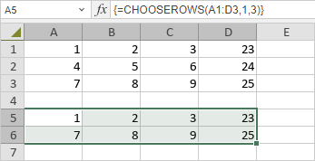

CHOOSEROWS Funkcija
Funkcija CHOOSEROWS je jedna od funkcija za pretragu i referencu. Koristi se za vraćanje redova iz niza ili reference.
Sintaksa
CHOOSEROWS(array, row_num1, [row_num2], …)
Funkcija CHOOSEROWS ima sledeće argumente:
| Argument | Opis |
|---|---|
| array | Koristi se za postavljanje niza koji sadrži redove koji treba da budu vraćeni u novi niz. |
| row_num1 | Koristi se za postavljanje broja prvog reda koji treba da bude vraćen. |
| row_num2 | Opcioni argument. Koristi se za postavljanje dodatnih brojeva redova koji treba da budu vraćeni. |
Napomene
Imajte u vidu da je ovo formula niza. Da biste saznali više, pročitajte članak Umetanje formula niza.
Kako primeniti funkciju CHOOSEROWS.
Primeri
Slika ispod prikazuje rezultat koji vraća funkcija CHOOSEROWS.
